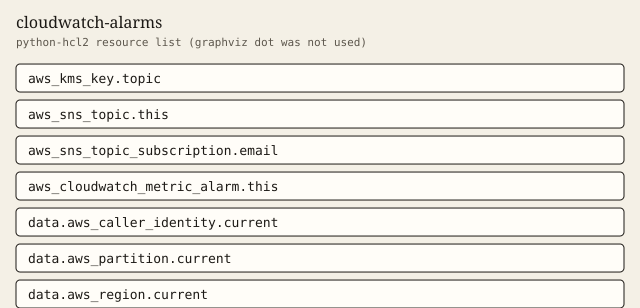

cloudwatch-alarms
Map-driven alarms that publish to an encrypted SNS topic.
Tests passed 6 of 6. Failed 0.
Inputs
| Name | Type | Required | Description |
|---|---|---|---|
| alarms | map(object({
kind = string
threshold = number
period = number
evaluation_periods = number
dimensions = map(string)
})) | no | Map of alarm name to definition. Each entry creates one alarm. Supported kinds are alb_5xx_rate, alb_target_response_time, ecs_cpu, ecs_memory, rds_cpu, rds_free_storage, sqs_oldest_message_age, and dlq_depth. |
| email_addresses | list(string) | no | Email addresses subscribed to the alarm topic. Empty creates no subscriptions. |
| name_prefix | string | yes | Prefix for the alarm names, the SNS topic, and the topic key. |
| tags | map(string) | no | Extra tags merged onto every taggable resource. ManagedBy and Module are always set by the module. |
Outputs
| Name | Description |
|---|---|
| alarm_action_count | How many actions each alarm is given. Every alarm uses the module SNS topic. |
| alarm_count | Number of alarms created. Equals the number of entries in alarms. |
| alarm_names | Alarm names created by this module. |
| alarm_thresholds | Threshold of each alarm. dlq_depth is forced to 0. |
| caller_context | Account, partition, and region resolved from data sources. |
| email_subscription_count | Email subscriptions on the alarm topic. Zero when email_addresses is empty. |
| tag_audit | Tags on every taggable resource this module creates. |
| topic_name | SNS topic name that receives alarm actions. |
Example
The caller supplies the region. This example does not embed an account id.
module "alarms" {
source = "../.."
name_prefix = "demo-obs"
alarms = {
cpu = {
kind = "ecs_cpu"
threshold = 80
period = 60
evaluation_periods = 3
dimensions = { ClusterName = "app", ServiceName = "api" }
}
}
tags = {
Example = "basic"
}
}
Tests
- three_alarms_no_email passed
- single_email passed
- storage_and_age passed
- empty_pack passed
- reject_unknown_kind passed
- reject_bad_email passed
Mock plan excerpt
mocked provider: ARNs and IDs are simulated. This excerpt is from terraform test with a mocked provider, not a live plan.
mocked provider: ARNs and IDs are simulated. This is terraform test -verbose, not a live plan.
tests\cloudwatch-alarms.tftest.hcl... in progress
run "three_alarms_no_email"... pass
Terraform used the selected providers to generate the following execution
plan. Resource actions are indicated with the following symbols:
+ create
Terraform will perform the following actions:
# aws_cloudwatch_metric_alarm.this["cpu"] will be created
+ resource "aws_cloudwatch_metric_alarm" "this" {
+ alarm_actions = [
+ (known after apply),
]
+ alarm_description = "cpu (ecs_cpu)"
+ alarm_name = "demo-obs-cpu"
+ arn = (known after apply)
+ comparison_operator = "GreaterThanThreshold"
+ evaluate_low_sample_count_percentiles = (known after apply)
+ evaluation_periods = 2
+ id = (known after apply)
+ ok_actions = [
+ (known after apply),
]
+ tags = {
+ "ManagedBy" = "terraform"
+ "Module" = "cloudwatch-alarms"
+ "Owner" = "platform"
}
+ tags_all = (known after apply)
+ threshold = 80
+ treat_missing_data = "notBreaching"
+ metric_query {
+ id = "m1"
+ return_data = true
+ metric {
Resources
graphviz dot was not installed. The figure is a python-hcl2 resource list.

Changelog
Changelog
All notable changes to this module are documented in this file.
The format is based on Keep a Changelog, and this module uses Semantic Versioning.
[1.0.0] - 2026-10-03
Added
- Map-driven CloudWatch alarms and an encrypted SNS topic.
Billable item names
Names only. This page does not quote a price. Example amounts, including a budget limit, are placeholders and are not recommendations. GuardDuty and Security Hub stay off unless a module switch is set, because those services are billable.
- Amazon CloudWatch
- Amazon SNS
- AWS Key Management Service